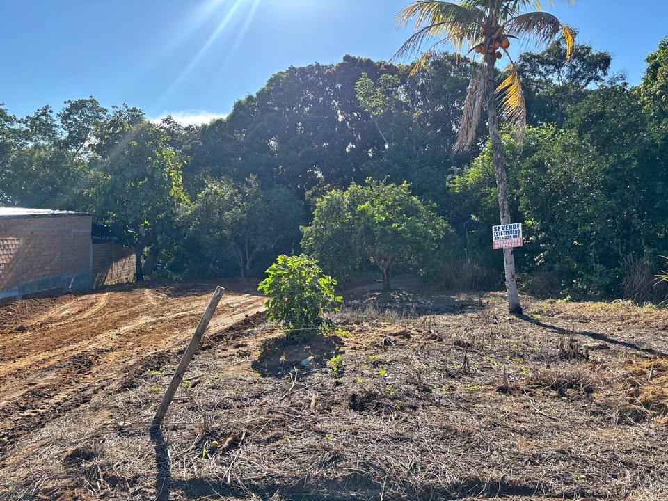

PEN55 164 m²

¡Oportunidad! Terreno Urbano de 164 m² con TÍTULO SUNARP en Tarapoto (La Banda de Shilcayo) Ubicado en el tranquilo y seguro Sector Laguna Venecia (Distrito de La Banda de Shilcayo), a pocos minutos del centro de Tarapoto. Cerca del Jr. Los Alamos y Jr. Capirona. Excelente zona residencial en pleno crecimiento, rodeada de áreas verdes y casas ya construidas. Características del Terreno: Área Total: 164 m² (0.0164 Has). Dimensiones: Ideal para construir (aprox. 7 metros de frontera x 23.4 metros de fondo). Topografía: Plana, lista para proyectar tu futura casa. Servicios: Zona con factibilidad